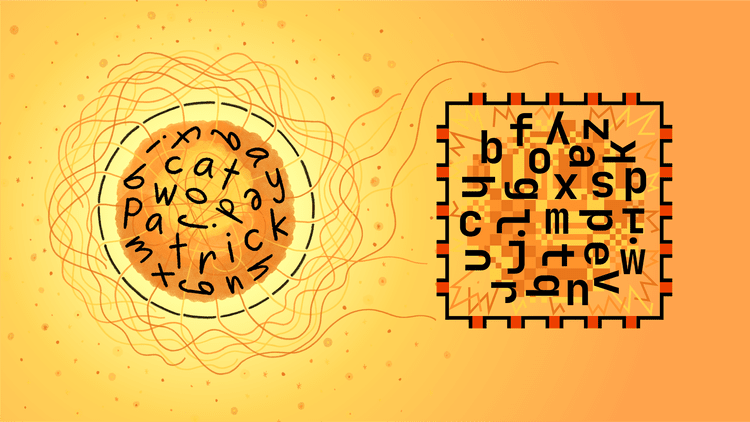
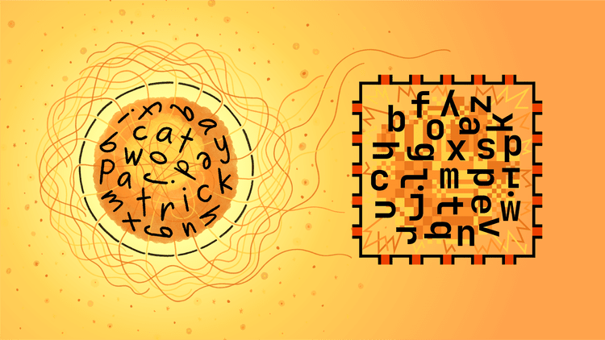

AI diagrams : TED conference
 2025
2025
 Centre de conférences et d'expositions de Vancouver, Canada
Centre de conférences et d'expositions de Vancouver, Canada
Ce projet, commandé par le studio de design Odyssey Works, a invité Stefanie Posavec à travailler pour le scientifique Yoshua Bengio, lors d'une conférence TED (en français, cet acronyme signifie technologie, divertissement et design), afin de communiquer au grand public les dangers potentiels de l'IA. Stefanie a conçu des diagrammes pour illustrer l'argumentation de Bengio : les humains tirent leur capacité d'action et leur joie de l'intelligence et du langage. En effet, selon lui, le danger survient lorsque, à mesure que l'IA devient plus autonome (car elle est aussi formée au langage), nous externalisons nos propres capacités.
 

© Crédit : Stefanie Posavec